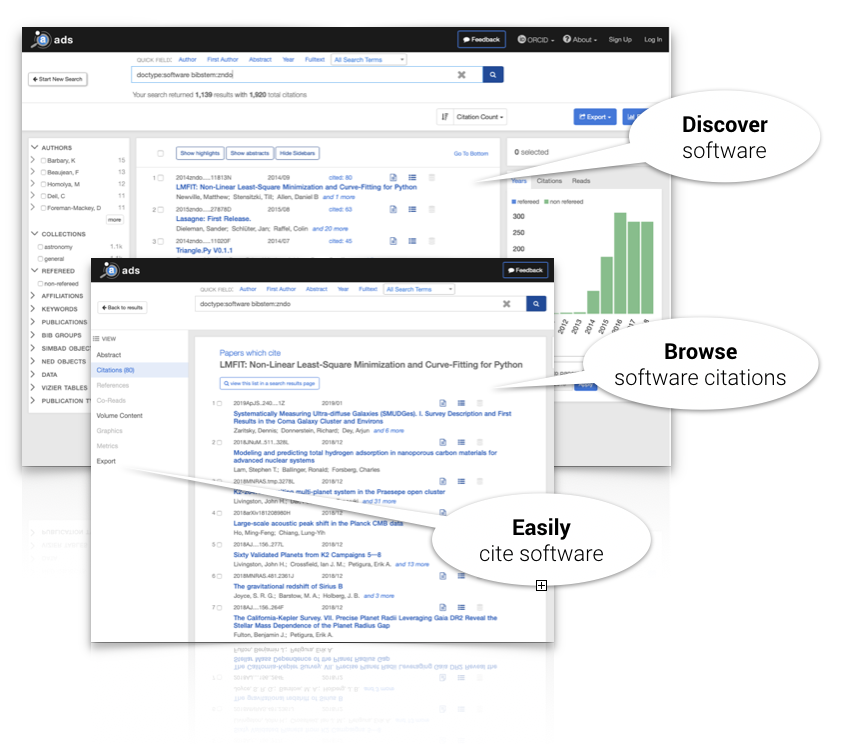
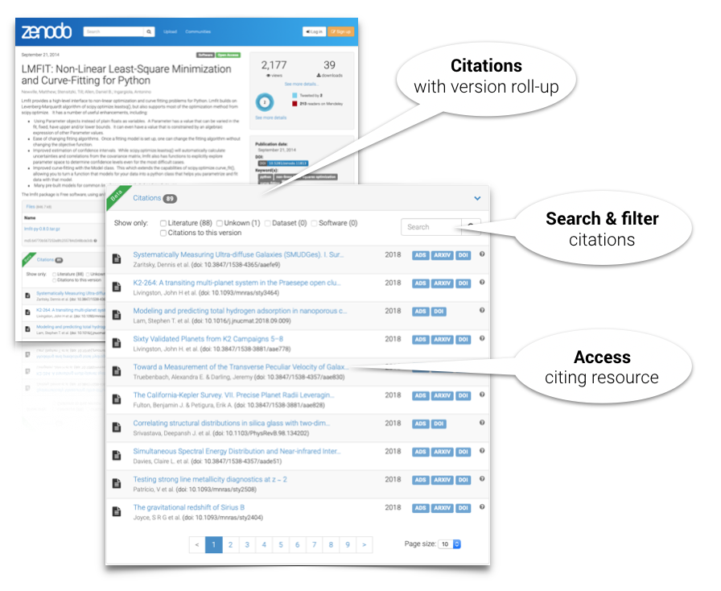

Software citations now available in Zenodo
by
 Lars Holm Nielsen
on January 10, 2019
Lars Holm Nielsen
on January 10, 2019
We are proud to announce the release of enhancements which significantly facilitate scientific software citation and discovery. These represent the successful outcome of the Asclepias project, funded by the Alfred P. Sloan Foundation, and involving the American Astronomical Society, NASA ADS bibliographic index and the Zenodo repository.
NASA Astrophysics Data System
The NASA ADS now extracts and indexes cited software repositories published with the DataCite registry, making them discoverable through its platform and resulting in new metrics for software use and reuse in astronomical research.

Zenodo
Zenodo, using citation brokering software built for the Asclepias project, receives software citations from ADS and other sources, and displays them on the repository's software records.

Discover and cite software
These infrastructure updates provide important new tools for authors of research papers and developers of scientific software.
Authors can now find a wider selection of citable software records in ADS, which can be directly be incorporated into their manuscripts using the ADS tools that astronomers rely upon.
Developers who preserve their software by creating persistent citable entries, e.g. in Zenodo, can discover their software's reuse metrics right on their Zenodo repository's landing page.
Astronomers, who often work across such divisions, can use ADS to track all of their publication and software research outputs.
Tracking citations
ADS and Zenodo rely upon a combination of full-text content from Publishers as well as metadata from the DataCite and CrossRef registries to provide these services. High fidelity indexing and tracking of software objects in the literature is thus dependent on careful, intentional work by developers, authors, and publishers when archiving and citing these digital objects. With these enhancements, ADS and Zenodo now provide citation minting and tracking capabilities which comply with the recommendations of the Force11 software citation implementation working group.
More information: